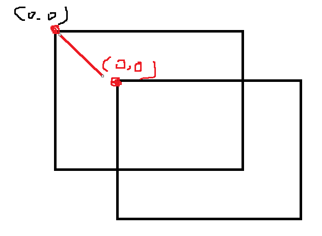
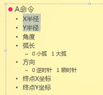

1.canvas画布(位图)
2.绘制矢量图
1.不要在style中给canvas设置宽高 会有位移差
2.
//获取元素
var c=document.getElementById("c")
//获取绘图环境
var c=c.getContext("2d")
fillRect() 绘制一个填充的方块 默认颜色是黑色
strokeRect() 绘制带边框的方块
绘制线条
moveTo() 绘制线段起点
lineTo() 绘制线段的领点
每个线条只能有一个 moveTo可以有多个 lineTo
stroke() 绘制线段
beginPath() closePath() 二者同时出现 将绘制路径闭合（起始点 结尾点首位相连）
Rect() 绘制方块
clearRect（0,0,width,height）清楚画布
save() restore() 二者成对出现 中间属性样式只影响内部，不影响外部
1.画圆
c.closePath()
c.fill()
c.restore()
c.moveTo(200,200)
c.arc(200,200,150,0,360*Math.PI/180,true)
c.stroke()200,200是圆形坐标 50是半径
0是起始弧度 Math.PI是结束弧度
true是逆时针 flase是顺时针
注意：角度有正负之分 顺时针角度是正的，逆时针角度是负的
2.画布的平移和旋转
平移translate 画布大小位置不变 起始坐标变了
相当于坐标平移
rotate() 画布的旋转都是以00起始点为中心点旋转
scale(0.5,0.5) 画布的缩放 就是将画布向后移动 跟人的视距就变远了 近大远小
c.fillStyle='lightpink'
c.scale(0.5,0.5)
c.fillRect(0,0,100,100)
画布中插入图片
//获取元素
var c=document.getElementById("c")
//获取绘图环境
var c=c.getContext("2d")
var img=new Image;
img.src="img/02.jpg"
img.onload=function(){
c.drawImage(img,10,20,160,200)
}
插入字体
//字体大小 样式
c.font="30px imapct"
c.fillText("全站最强",200,200)
//字体空心
c.strokeText("Big smile!",200,200)
svg
svg绘制矢量图
svg使用xml格式绘制图形
svg要有一个根节点 叫svg标签 相当于html
<svg xmlns="http://www.w3.org/2000/svg" version="1.1">
<circle cx="100" cy="50" r="40" stroke="black"
stroke-width="2" fill="red" />
</svg>
<svg xmlns="http://www.w3.org/2000/svg" version="1.1" width="500px" height="400px">
</svg>
svg如果不设置大小，默认占用面积 3008*150
1.定义矩形
rect标签有：
width height 矩形宽高
fill 定义矩形填充颜色(rgb值、颜色名或16进制)
stroke-width 定义矩形边框宽度
stroke 定义矩形边框以及颜色
x 定义矩形左侧位置(矩形到浏览器窗口左侧距离)
y 定义矩形顶端位置(矩形到浏览器窗口顶端位置)
fill-opacity 定义填充颜色透明度
stroke-opacity 定义边框颜色透明度
Rx Ry 可以使矩形产生圆角
<!--矩形-->
<rect width="100px" height="100px" x="50" y="250" rx="20" ry="20" style="fill:pink;stroke-width: 5;stroke: red;"></rect>fill-opactty和opacity的区别?
fill-opacity只改变填充颜色透明度 opacity改变fill和stroke的透明度都改变
2.定义圆
circle cx cy 定义圆点的 x和y坐标。如果省略cx和cy，圆的中心会设置为(0,0)
r定义半径
<!--圆形-->
<circle cx="200" cy="200" r="50" style="stroke:"pink"; fill:'red';">
</circle>
3.定义椭圆
椭圆和圆很相似。不同之处在于椭圆有不同的x和y半径，而圆的x和y半径是相同的
ellipse cx cy定义圆中心的x，y坐标
rx 定义水平半径
ry 定义垂直半径
<!--椭圆-->
<ellipse cx="300" cy="340" rx="100" ry="50" style="fill: yellowgreen;"></ellipse>
4.定义直线
line x1 y1 定义起始坐标 x2 y2定义结束坐标 必须结合 stroke
<!----直线---->
<line x1="150" y1="250" x2="100" y2="100" style="stroke: lawngreen;"></line>
5.定义多边形
polygon poinits=“定义多边形每个角x和y坐标”
<!--定义多边形-->
<polygon points="240,10 330,190 290,210" style="fill: pink; stroke: red;">
</polygon>
6.定义曲线(折线)
polyline poinits“折点的坐标”
<!--曲线-->
<polyline points="0,40 40,40 40,80 80,80 80,120 120,120 120,160 "style="stroke-width:5 ; stroke: pink; fill: none; ">
7.定义路径
d=“定义路径指令”
M 是起点坐标
L 是相邻点坐标
Z是让路径构成闭合回路
H代表水平划线 默认y轴上值一模一样
V 代表垂直的线条 默认x轴上值一样
A 后面跟七个值
<!--定义路径-->
<path id="path" d="M100 50 A60 60 0 1 0 300 50 " stroke="red" fill="none"></path>

8.g 用于相关元素进行组合
<g fill="pink" stroke="black" cx="60" cy="50" transform="translate(100,50)">
<circle r="30" ></circle>
<circle r="10" fill="blue" ></circle>
</g>
g身上的属性 子元素都会继承 但是g上的属性都必须显现属性，不是svg的私有属性，比如g上的圆心坐标不行
transform 转换svg中的一个属性 translate rotate scale
平移旋转 都是以起点 0 0 (svg的左上角) 点为参考点 而css3中以元素的中心点为参考点
text 用于定义文本 xy xy的值在字体左下角
<!----txte---->
<text stroke="blue" x="400" y="400" font-size="20" text-anchor="middle">哈哈哈哈</text>
9.绘制图片
<!----image---->
<image x="80" y="80" width="100" height="100" xlink:href="02.jpg"></image>10.use 用于复制元素 xy
xy是相对原始元素的坐标位置 不是相对svg的00点坐标
<!----use---->
<circle cx="40" id="a" cy="40" r="10" translate="100,0" fill="blue"></circle>
<use x="10" y="10" xlink:href="#a"></use>
11.animate 写在需要动画元素的中间
<circle cx="250" cy="310" r="15" fill="lightblue">
<animate attributeName="cy" from="310" to="690" dur="2s" repeatCount="indefinite">
</circle>